Case study 06 · Website
Construction & Interior Design Firmwebsite
An editorial site for a Delhi design-build studio: an animated 3D-floorplan hero, a portfolio filtered by type and a room you can re-dress in four palettes.
- Status
- Live at buildwithsnc.com, 30 pages (6 Nov 2026)
- My role
- Designed and delivered, AI-assisted: I gathered the brief, shaped the content structure and made the product calls, directed AI coding tools, tested every change and put it live
- Built with
- HTML5 · modern CSS with design tokens · vanilla JavaScript · JSON-driven project and article data · scroll-driven animation

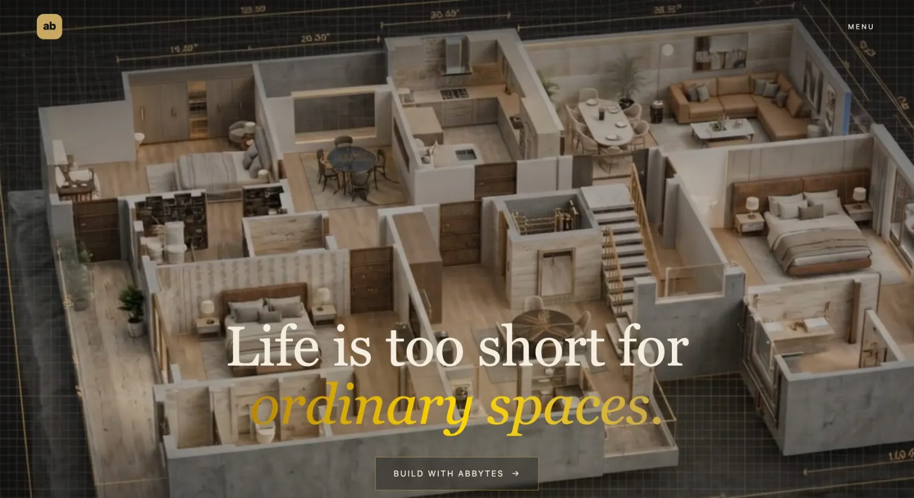
01 · In short: A website with the finish of its homes.
SNC is a South Delhi construction and interiors studio. The brief: dark, editorial and gold-accented, closer to a magazine than a template; a page for every project, with the whole set filterable by type; and an enquiry form that tells the studio what each visitor is asking about.
02 · What it does
The site, page by page.
Home
An animated 3D-cutaway hero, the studio’s four “registers”, and the story from plot to keys.
Interiors
Design and build from one studio: pick a mood, see the design before it’s built, the studio’s execution habits, a cost configurator by tier and area, and material registers.
Construction & Collaboration
The ground-up build and plot-collaboration offer.
Projects
17 project pages covering 14 projects, filterable by construction, interior, commercial or for sale.
Blog
5 long-form articles (reading a builder floor, Italian marble in Delhi homes, plot collaboration…).
Contact
An enquiry form that tags each message as one of 5 types.
03 · What makes it different: Six features, one finish.
- 3D-floorplan hero. An animated, scroll-driven cutaway of a home opens the site before any sales copy.
- Filterable portfolio. Filter by construction, interior, commercial or for sale; every project opens its own page with notes, specifications and related homes, and most add a walkthrough video, a 3D isometric plan and an area schedule.
- Live palette configurator. Tap a theme and the same room re-dresses in place: The Pale, The Walnut, The Saffron or The Carmine.
- Two services, two pages. Interiors and Construction & Collaboration each get a page and a story of their own.
- Long-form journal. Articles on reading a builder floor, Italian marble in Delhi homes and plot collaboration.
- Self-sorting enquiries. The contact form tags each enquiry as one of five types and emails it to the studio.
04 · What the business can configure: What changes without a redesign.
- Projects
- Project data is JSON-driven, so a new project page uses the same template (hero, notes, specifications, related homes) and joins the filterable index.
- Articles
- Blog articles are JSON-driven in the same way.
- Portfolio filters
- Construction, interior, commercial and for sale.
- Palette themes
- The Pale, The Walnut, The Saffron and The Carmine.
- Enquiry types
- Five, chosen with “What brings you here?”.
It’s a static site with no framework or page builder, so these are edits to the site’s data files rather than a CMS.
05 · Key screens
Screens are from a demo build captured in Sep 2026: “abBytes” (my GitHub handle, not a company) stands in for the studio’s name.
01First impression

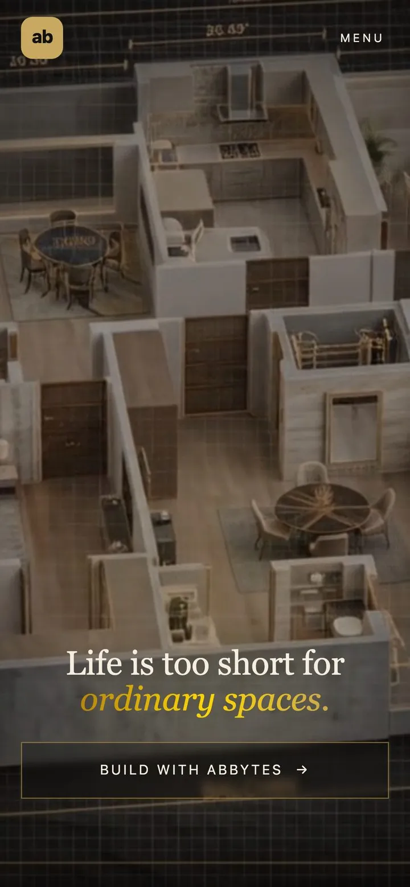

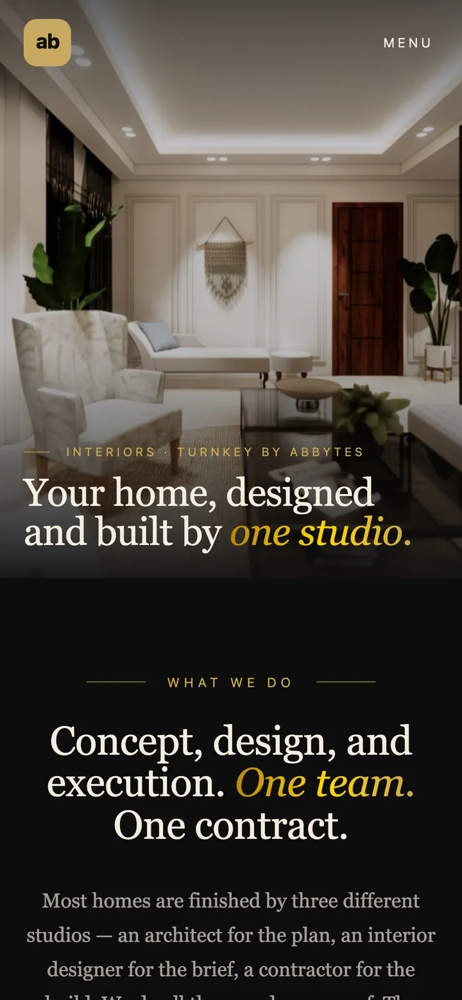

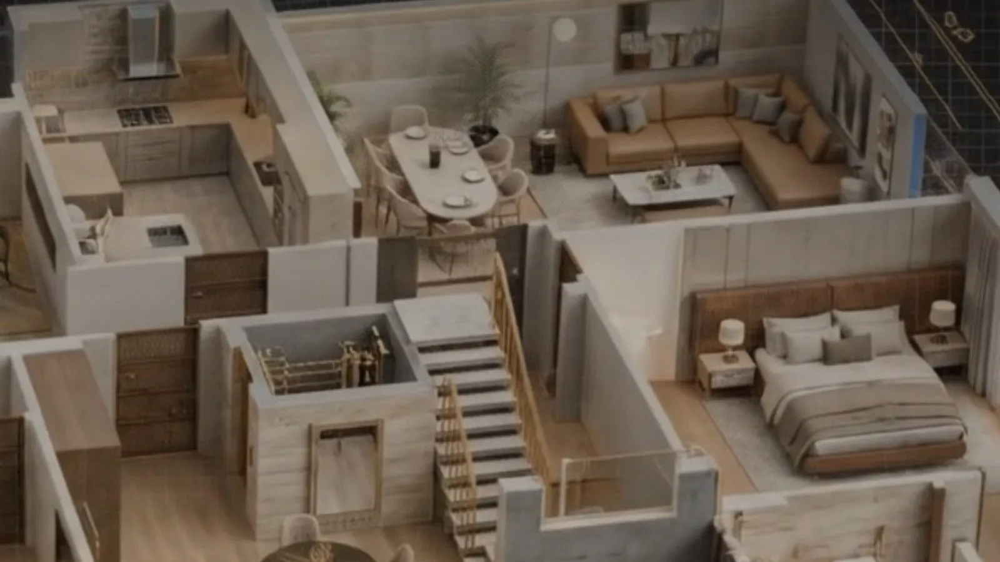
02The portfolio

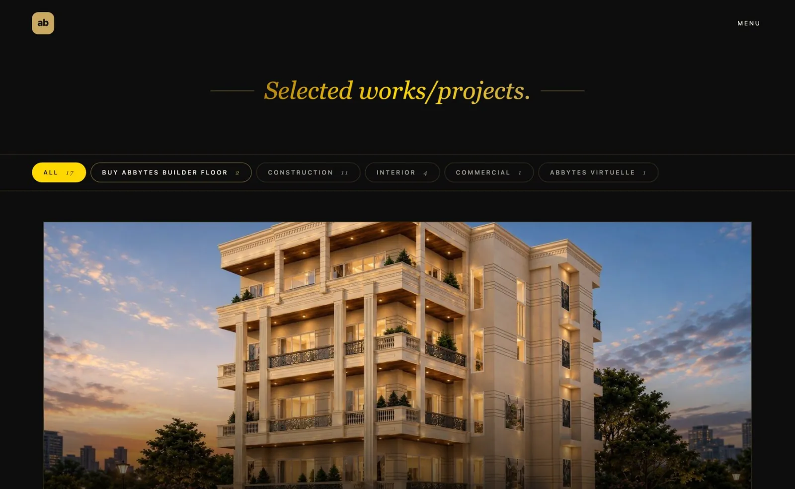

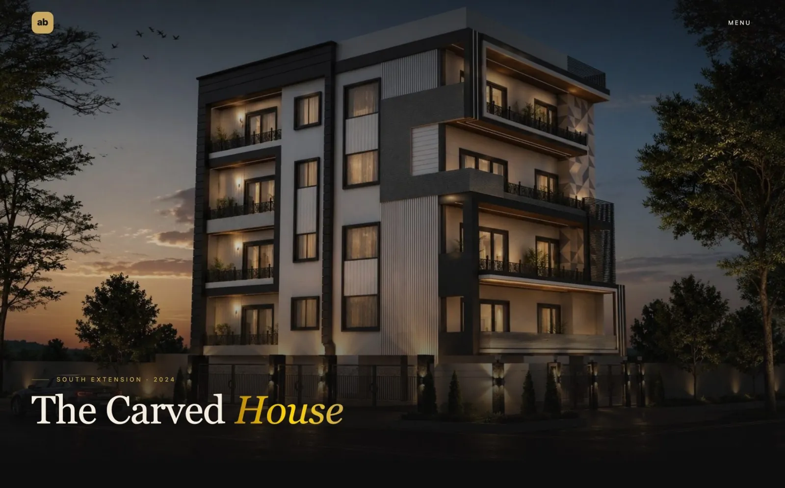

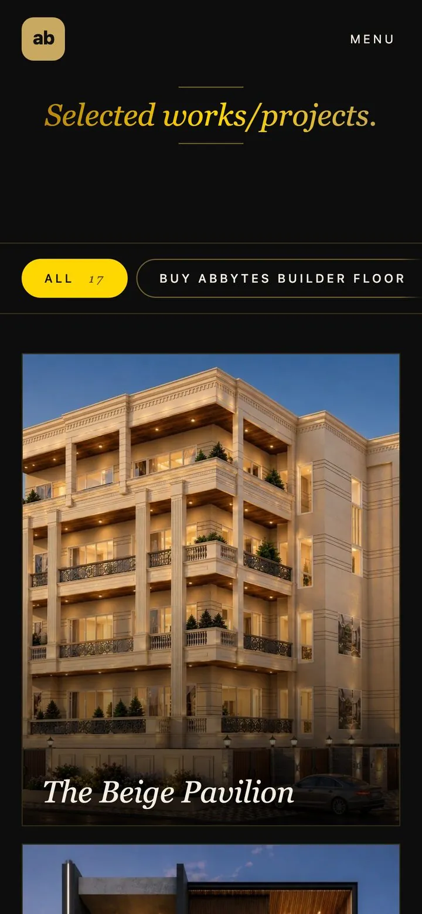
03Pick a mood

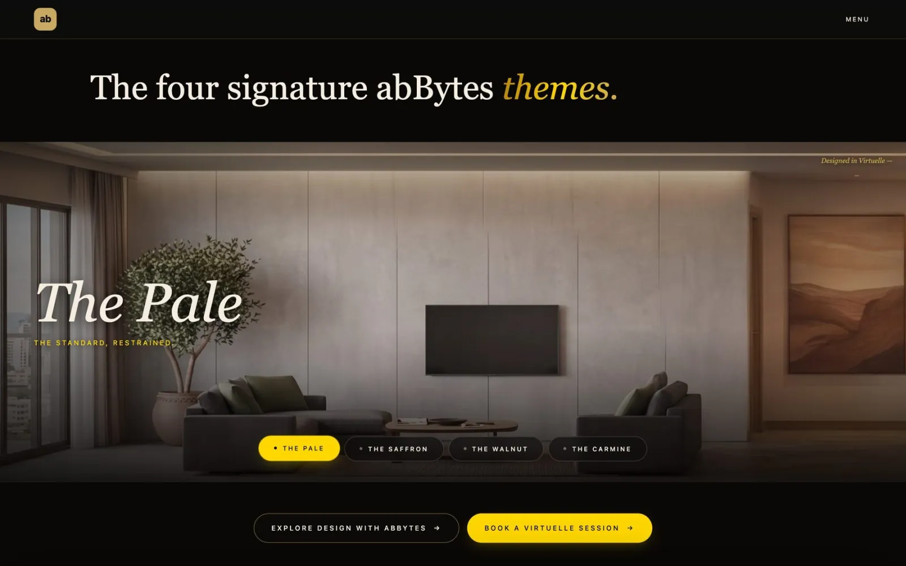

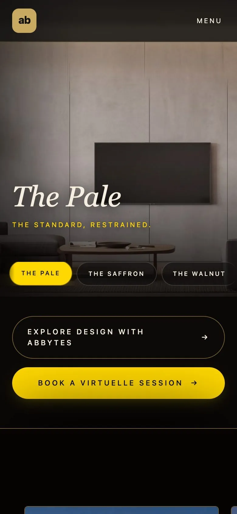
04Start the conversation

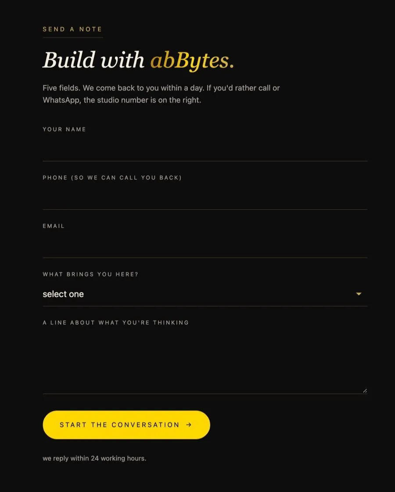
05Page heroes

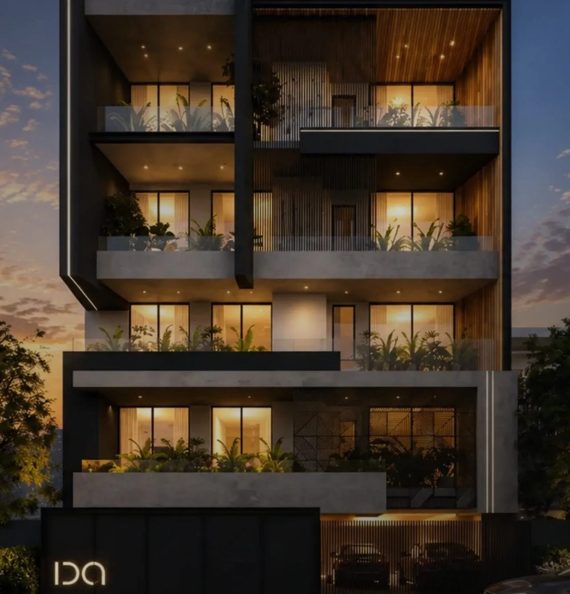

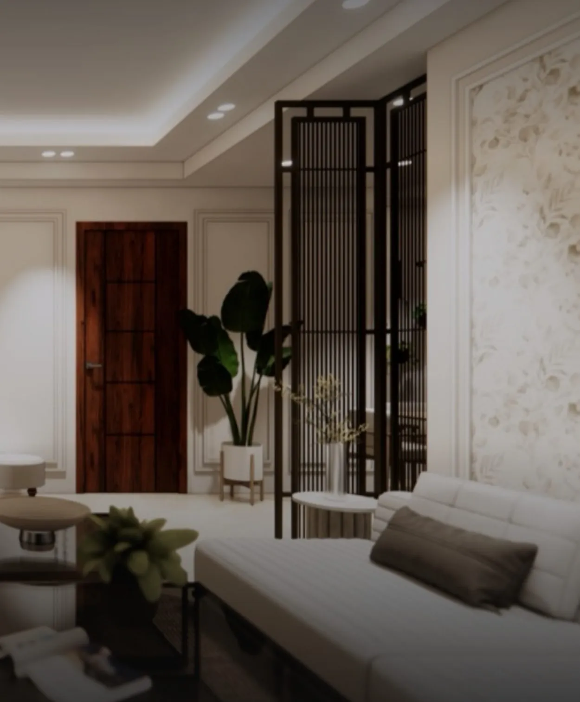
06 · What’s live, dated
By the numbers: what shipped, not traffic.
30
pages on the live site
6 Nov 2026
17
project pages, covering 14 projects
Oct 2026
5
long-form articles
Oct 2026
5
enquiry types the contact form tags
Oct 2026
Not claimed
Counted on the live site. No visitor or sales figures are claimed.
07 · How it was built
- RoleGathered the brief, shaped the content structure and made the product calls; directed AI coding tools, tested every change and put it live
- MethodAI-assisted build
- StatusLive, 30 pages (6 Nov 2026); screens captured Sep 2026
StackHTML5 · modern CSS with design tokens · vanilla JavaScript · JSON-driven content · IntersectionObserver + scroll-driven animation
08 · Links & PDF
- Live sitebuildwithsnc.com
- Project showcasegithub.com/abBytes-sudo/interior-design-studio-website-showcase
- The studio’s CRM / ERPCase study 03 · Construction & Interior Design Firm — CRM / ERP
Site content and photography belong to the studio.
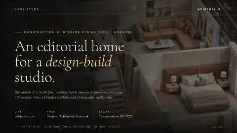